I. Что такое Единство
Истоки
Иерархия Единства возникла в Западных землях как попытка сохранить Мир Дракона после Последней Битвы. Мирный договор пережил своих создателей, но с каждым поколением политическое напряжение росло. Совет мира, представители королевств и направляющие создали надгосударственную систему, которая связывает участников через общий энергетический резерв и делает благополучие отдельных народов частью общей безопасности.
Единая Клятва и Взнос Воли
Вступление начинается с Единой Клятвы — ритуала на специальном тер’ангриале, сформированном на основе знаний о принципах Клятвенного жезла и кругов Единой Силы. Клятва создаёт устойчивый канал к сети Единства. Через него участник передаёт Взнос Воли — долю собственной жизненной энергии, поступающую в общий резерв. Взнос Воли не ведётся отдельными очками на листе персонажа: его стандартная цена уже выражена механикой I ранга.
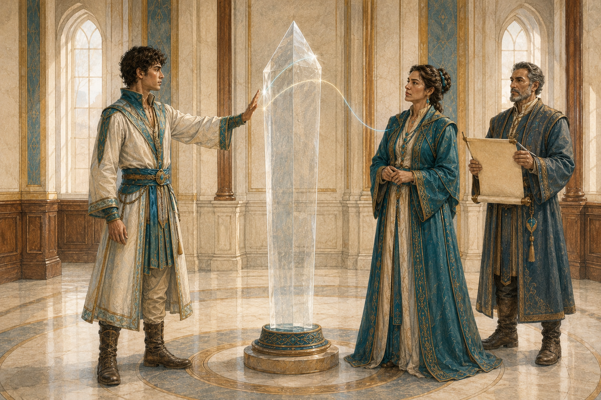
Свобода воли
Единая Клятва не является контролем разума. Участник может отказаться от приказа, солгать, предать организацию или поддержать мятеж. Нарушение клятвы само по себе не наносит урон и не накладывает состояние. Последствия определяются законами, политикой и процедурами Единства: от расследования до отсечения от резерва или окончательного снятия связи. После подключения участник не может просто волевым решением выключить Взнос Воли — для прекращения канала требуется специальная процедура или эффект.
Общий резерв и коллективная оборона
Резерв Единства — инфраструктура всей системы, а не личный запас отдельного лидера. При крупномасштабной организованной агрессии он способен перераспределять энергию в пользу защищающейся стороны. Это стратегическая функция мира и войны; сама по себе она не даёт универсального числового бонуса в каждом бою и не накладывает автоматического штрафа на агрессора. Конклав может также направлять энергию в кризисах, но любое сверхштатное числовое усиление требует отдельного правила, ритуала или механики сцены.
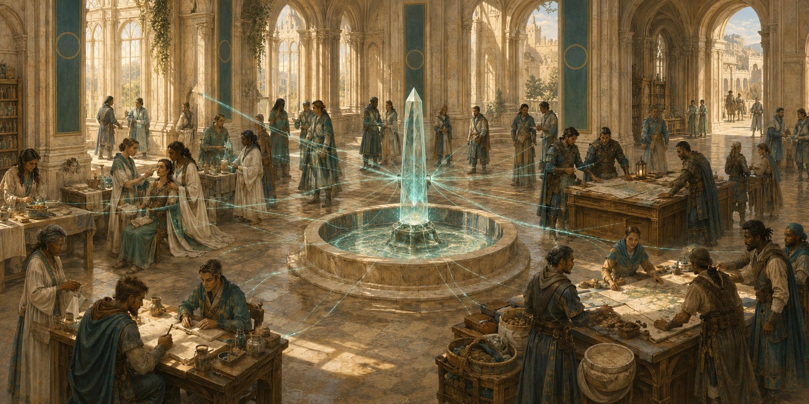
II. Структура и продвижение
Пять рангов
Официальные титулы Единства: I — Посвящённый, II — Хранитель Единства, III — Наставник Единства, IV — Верховный Советник, V — Проводник Единства. Названия вроде «офицер», «командир» или «глава» являются должностными описаниями и сами по себе не определяют механический ранг.
Конклав
Конклав Единства — высший коллегиальный орган. В штатном состоянии в него входят 5–7 Проводников Единства V ранга. Формального единоличного главы нет: Проводники равны по механическому рангу, хотя их политическое влияние и сферы ответственности могут различаться. Верховные Советники IV ранга составляют высший управленческий слой под Конклавом и могут входить в широкие советы, коллегии и региональные органы.
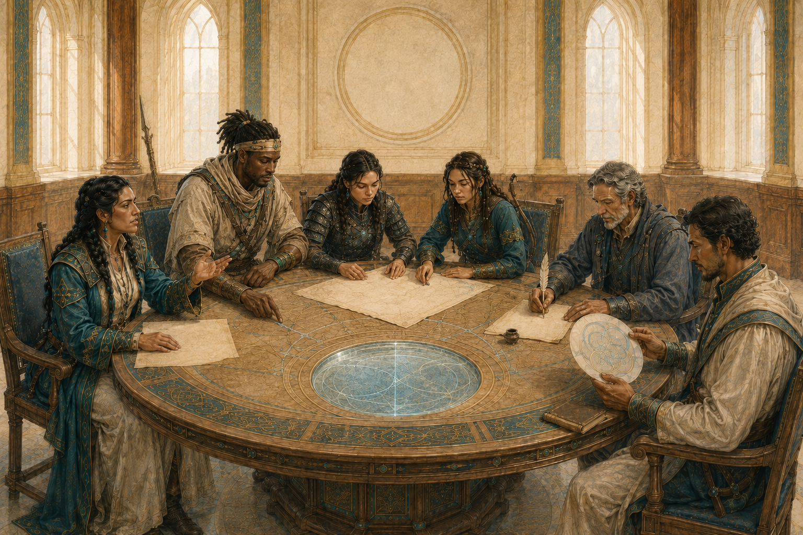
Академии Миротворцев
В странах Западного Союза действуют школы и академии Единства. Наиболее известная традиция связана с Академией Миротворцев в возрождённом Тар Валоне, где готовят дипломатов, военных, исследователей и направляющих. Обучение и диплом дают репутацию и могут ускорить рассмотрение кандидатуры, но не предоставляют механический ранг автоматически.
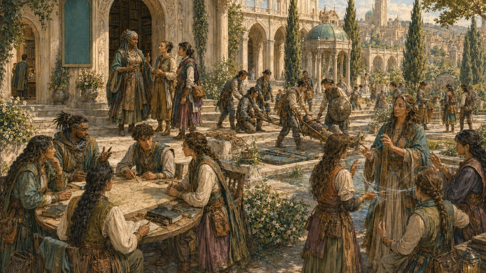
Как повышается ранг
Ранги приобретаются только последовательно: I → II → III → IV → V. Заслуги, число сторонников, должность или известность делают персонажа кандидатом, но не активируют новый ранг сами по себе. Повышение требует предусмотренных испытаний, рекомендаций, решения уполномоченного органа и активации нового доступа к резерву. Переход III → IV и IV → V санкционирует Конклав. Точные пороги голосования правилами Единства не устанавливаются.
Ранг не равен должности
Командующий, дипломат, ректор или губернатор может иметь любой подходящий ранг, а высокий Иерарх может временно не занимать административного поста. Потеря должности не означает автоматической потери ранга, и наоборот.
III. Общие правила рангов
Наследование способностей
Получая новый ранг, персонаж сохраняет уникальные способности нижестоящих рангов, если конкретное правило не говорит об обратном. Числовые профили при этом не складываются автоматически: скорость, инициатива, бонусы к спасброскам, бонус к СЛ плетений, профиль усиления и число дополнительных применений берутся по текущему рангу. Способности с собственным лимитом использования имеют независимые ресурсы, если их правило прямо не устанавливает общий пул. «Обратный поток» наследуется с II ранга, но его величина уменьшения урона всегда определяется профилем текущего ранга.
Характеристики
На I ранге персонаж выбирает две различные характеристики и уменьшает каждую на 1. Выбор делается один раз. При получении II ранга эти два штрафа сначала полностью прекращаются, и только затем применяется новый пакет II ранга. На каждом ранге II–V персонаж получает новый накопительный пакет +2 к двум выбранным характеристикам; пара может быть другой на каждом ранге. Пределы: II — 22; III — 24; IV — 24; V — 24, а Интеллект и Мудрость — 26.
Хиты и Кости Хитов
II ранг даёт +10 к максимуму хитов. На III–IV рангах вклад классовых Костей Хитов в максимум хитов удваивается, а запас Костей Хитов для отдыха становится вдвое больше. На IV ранге дополнительно прибавляется ещё +20 к максимуму хитов, поэтому фиксированная ранговая прибавка становится +30. На V ранге вклад классовых Костей Хитов и их запас увеличиваются втрое, а фиксированные +30 сохраняются. Модификатор Телосложения не умножается: он учитывается обычным образом для каждого уровня. При мультиклассе каждый тип Кости Хитов сохраняет свой тип.
Скорость
Бонус скорости — профиль текущего ранга: II +10 футов, III +15 футов, IV +20 футов, V +30 футов к базовой скорости ходьбы. Он не изменяет автоматически скорость плавания, лазания, полёта и иные отдельные виды скорости.
Продление жизни
Связь с резервом замедляет естественное старение. Для ненаправляющих ориентиры таковы: I — обычная продолжительность жизни; II — примерно 100–120 лет; III — около 150; IV — около 200; V — 250–300 лет и более. Повышение не омолаживает уже постаревшее тело. При полном прекращении подпитки дальнейшее ранговое замедление старения прекращается, но «догоняющего» старения не происходит. Если у персонажа уже есть отдельное замедление старения, коэффициенты не перемножаются: используется более благоприятный действующий профиль.
IV. Ранговая прогрессия
| Ранг | Титул | Характеристики / предел | Скорость | Инициатива | Спасброски |
|---|---|---|---|---|---|
| I | Посвящённый | −1 к двум различным характеристикам по выбору персонажа; обычный предел | без изменения базовой скорости ходьбы | −1 | −1 ко всем |
| II | Хранитель Единства | +2 к двум выбранным характеристикам; до 22 | +10 фт | +2 | +1 ко всем |
| III | Наставник Единства | ещё +2 к двум выбранным характеристикам; до 24 | +15 фт | +5 | +2 ко всем; преимущество против эффектов, способных наложить «испуган» |
| IV | Верховный Советник | ещё +2 к двум выбранным характеристикам; до 24 | +20 фт | +5 и преимущество | +3 ко всем; преимущество против эффектов, способных наложить «испуган» |
| V | Проводник Единства | ещё +2 к двум выбранным характеристикам; до 24; Интеллект и Мудрость — до 26 | +30 фт | +10 и преимущество | +5 ко всем; иммунитет к «испуган» и «очарован» |
| Ранг | Хиты / Кости Хитов | Продление жизни | Для направляющих | Уникальные способности |
|---|---|---|---|---|
| I | без рангового бонуса | обычное старение | нет дополнительных эффектов | — |
| II | +10 к максимуму хитов | ориентир 100–120 лет | +2 к СЛ; профиль усиления 2; 2 дополнительных применения | Обратный поток (1к8 + БМ) |
| III | фиксированные +10; вклад классовых Костей Хитов ×2; запас Костей Хитов ×2 | ориентир около 150 лет | +4 к СЛ; профиль усиления 5; 3 дополнительных применения | Обратный поток (2к8 + 2 × БМ); Предвидение тактики; Единство Плетений |
| IV | фиксированные +30; вклад классовых Костей Хитов ×2; запас Костей Хитов ×2 | ориентир около 200 лет | +6 к СЛ; профиль усиления 12; 4 дополнительных применения | Обратный поток (3к8 + 3 × БМ); всё III ранга; Стойкость Единства; Щит сплочённости; Легендарная решимость |
| V | фиксированные +30; вклад классовых Костей Хитов ×3; запас Костей Хитов ×3 | 250–300+ лет | +7 к СЛ; профиль усиления 24; 5 дополнительных применений | Обратный поток (5к8 + 3 × БМ); всё III–IV рангов; Господство Единой Силы; Единый фронт |
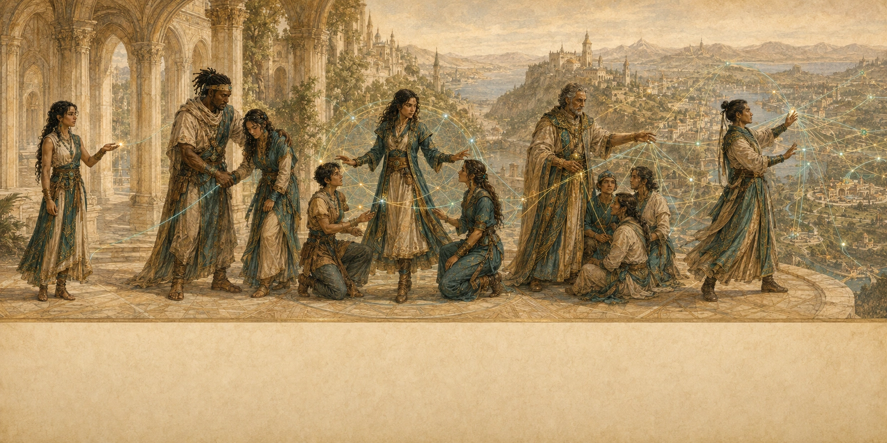
Ранг I · Посвящённый
При вступлении выберите две различные характеристики: каждая уменьшается на 1. Этот выбор не меняется, пока действует профиль I ранга. При переходе на II ранг оба штрафа полностью снимаются до применения новых повышений.
Ранг II · Хранитель Единства
На этом ранге вы получаете новый накопительный пакет +2 к двум выбранным характеристикам. Действует предел текущего ранга: до 22.
Уникальная способность: Обратный поток (1к8 + БМ).
Ранг III · Наставник Единства
На этом ранге вы получаете новый накопительный пакет +2 к двум выбранным характеристикам. Действует предел текущего ранга: до 24.
Наследуемые и новые уникальные способности: Обратный поток (2к8 + 2 × БМ); Предвидение тактики; Единство Плетений.
Ранг IV · Верховный Советник
На этом ранге вы получаете новый накопительный пакет +2 к двум выбранным характеристикам. Действует предел текущего ранга: до 24.
Наследуемые и новые уникальные способности: Обратный поток (3к8 + 3 × БМ); всё III ранга; Стойкость Единства; Щит сплочённости; Легендарная решимость.
Ранг V · Проводник Единства
На этом ранге вы получаете новый накопительный пакет +2 к двум выбранным характеристикам. Действует предел текущего ранга: до 24; Интеллект и Мудрость — до 26.
Наследуемые и новые уникальные способности: Обратный поток (5к8 + 3 × БМ); всё III–IV рангов; Господство Единой Силы; Единый фронт.
V. Уникальные способности
Обратный поток · ранг II–V
Когда другое дружественное существо, которое вы видите в пределах 30 футов, получает урон, вы можете использовать реакцию, чтобы направить к нему импульс общего резерва. После применения сопротивлений и иных модификаторов уменьшите оставшийся урон на величину, зависящую от вашего текущего ранга: II — 1к8 + БМ; III — 2к8 + 2 × БМ; IV — 3к8 + 3 × БМ; V — 5к8 + 3 × БМ. Значение текущего ранга заменяет предыдущее и не складывается с ним. Вы можете использовать «Обратный поток» количество раз, равное вашему бонусу мастерства, и восстанавливаете все израсходованные применения после продолжительного отдыха. Для одного случая получения урона может быть применён только один «Обратный поток», независимо от числа Иерархов Единства поблизости. Способность не действует на вас самого, не восстанавливает хиты и не предоставляет временные хиты, уменьшает только числовой урон и не отменяет иные последствия эффекта. Она требует действующей связи с резервом Единства.
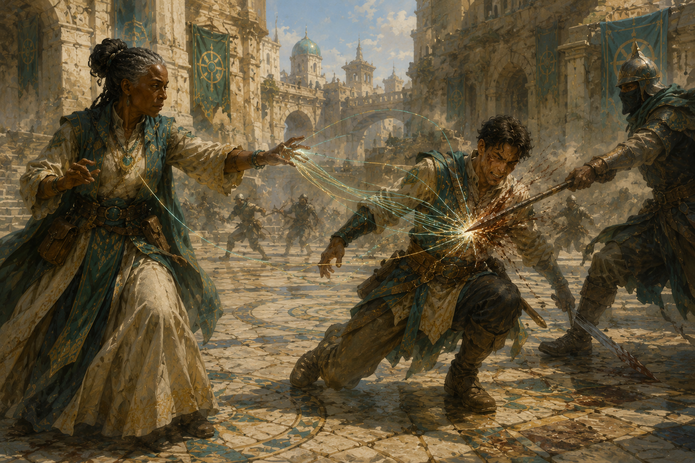
Предвидение тактики · ранг III
Один раз за раунд, когда вы или видимый вами союзник в пределах 60 футов совершает бросок атаки, проверку характеристики или спасбросок, вы можете после броска, но до объявления результата, заставить цель перебросить d20. Новый результат необходимо использовать. Способность не требует действия, бонусного действия или реакции. Ссылка на «Предвидение» описывает природу дара и не предоставляет иных эффектов одноимённого заклинания/плетения.
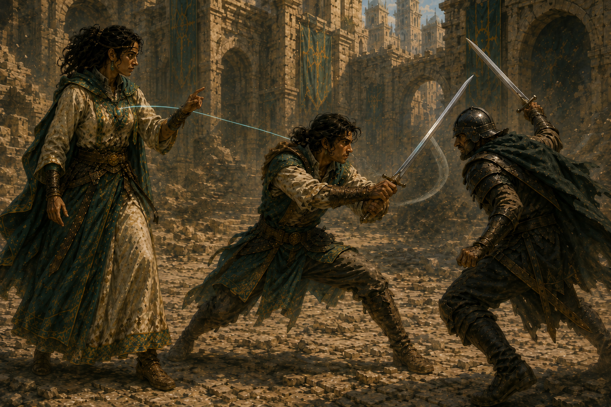
Единство Плетений · ранг III
Один раз за продолжительный отдых, если вы способны направлять Единую Силу, вы можете мгновенно привлечь силу одного или нескольких добровольных направляющих Единства в пределах 25 футов и сформировать специальный круг для сотворения одного плетения. Формирование круга не требует действий или проверок присоединения, но сохраняет обычные ограничения допустимого состава круга по полу и числу участников. Для этого плетения вы считаетесь направляющим на 2 уровня выше; фиксированный бонус +2 используется вместо обычного бонуса размера круга и не складывается с ним. После разрешения плетения круг немедленно прекращается. Способность не меняет ваш Уровень Силы, уровень персонажа или класса и не предоставляет постоянных ячеек.
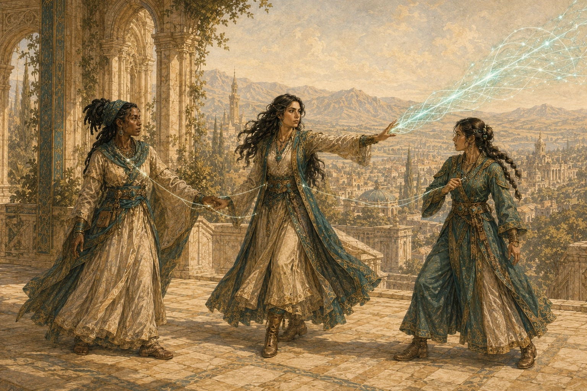
Стойкость Единства · ранг IV
Вы имеете сопротивление дробящему, колющему и рубящему урону от немагических источников и совершаете с преимуществом спасброски против плетений Единой Силы. Это пассивная способность, не требующая действия или концентрации. Она действует независимо от того, являетесь ли вы направляющим.
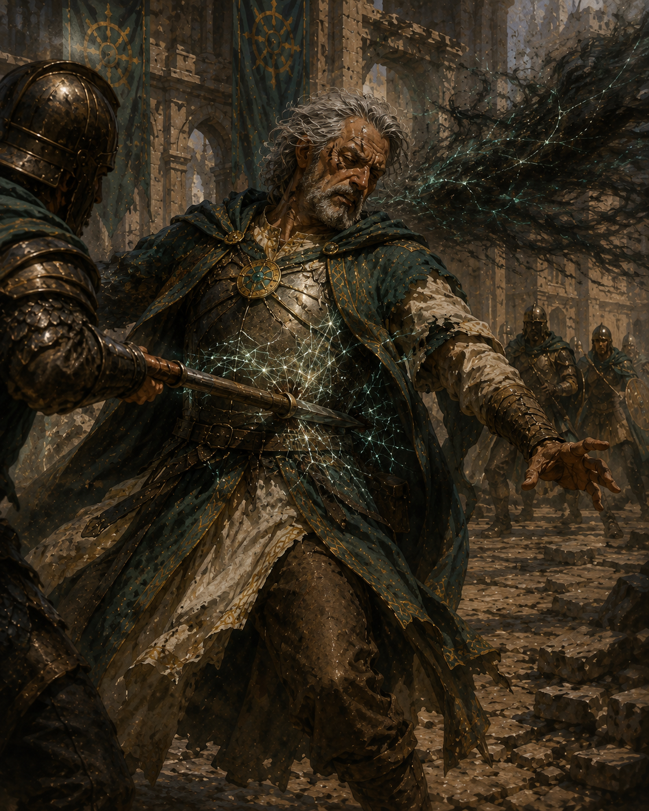
Щит сплочённости · ранг IV
Пока вы в сознании, вокруг вас постоянно действует подвижная аура радиусом 30 футов. Другие дружественные существа в ауре получают +2 ко всем спасброскам, включая спасброски от смерти, и сопротивление урону, непосредственно причинённому плетениями Единой Силы. Аура не требует действия или концентрации. Несколько «Щитов сплочённости» не складываются.
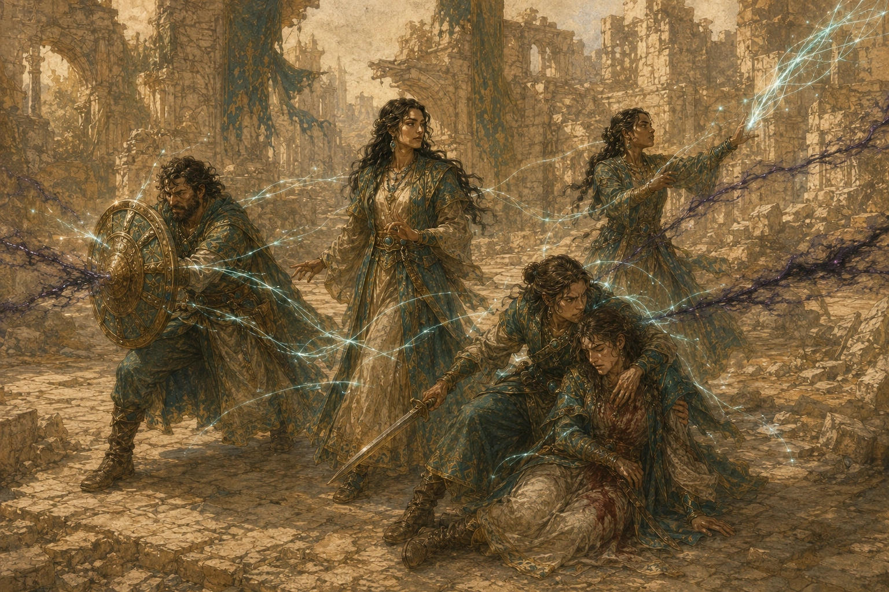
Легендарная решимость · ранг IV
Один раз за продолжительный отдых, когда вы проваливаете спасбросок, вы можете вместо этого считать его успешным. Способность не требует действия, бонусного действия или реакции и может применяться к спасброску от смерти. В таком случае она даёт один успешный спасбросок от смерти, а не натуральную 20 и не восстанавливает хиты. Поскольку активация не требует действия или реакции, сама потеря сознания не запрещает применение.
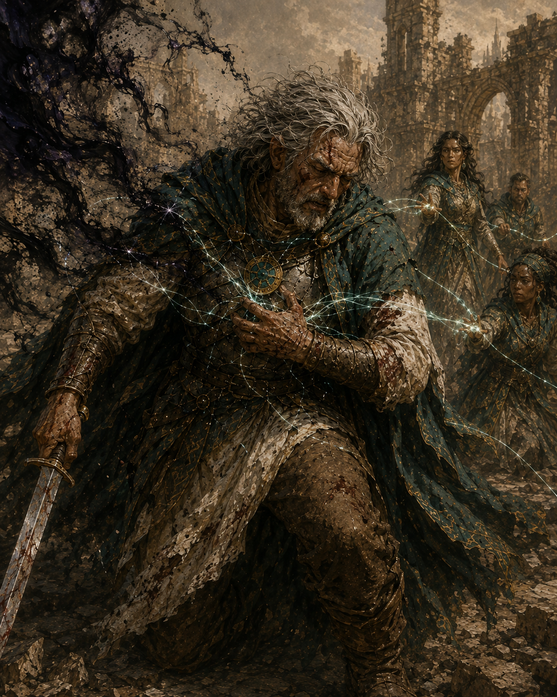
Господство Единой Силы · ранг V
Один раз за продолжительный отдых вы выбираете один из двух режимов. «Восстановление резерва»: в свой ход, не расходуя действие, бонусное действие или реакцию, мгновенно восстановите все израсходованные обычные ячейки плетений. Отдельные ресурсы Иерархии и другие способности не восстанавливаются. «Легендарное плетение»: в свой ход сотките одно дополнительное известное вам плетение со временем сотворения «1 действие», не расходуя для него действие. Ячейка или иной обычный ресурс плетения расходуется как обычно. Этот режим может применяться сверх «Создания нескольких плетений» и «Одновременного плетения», но не позволяет одновременно поддерживать более одного плетения, требующего концентрации, и сам по себе не прерывает уже удерживаемую концентрацию.
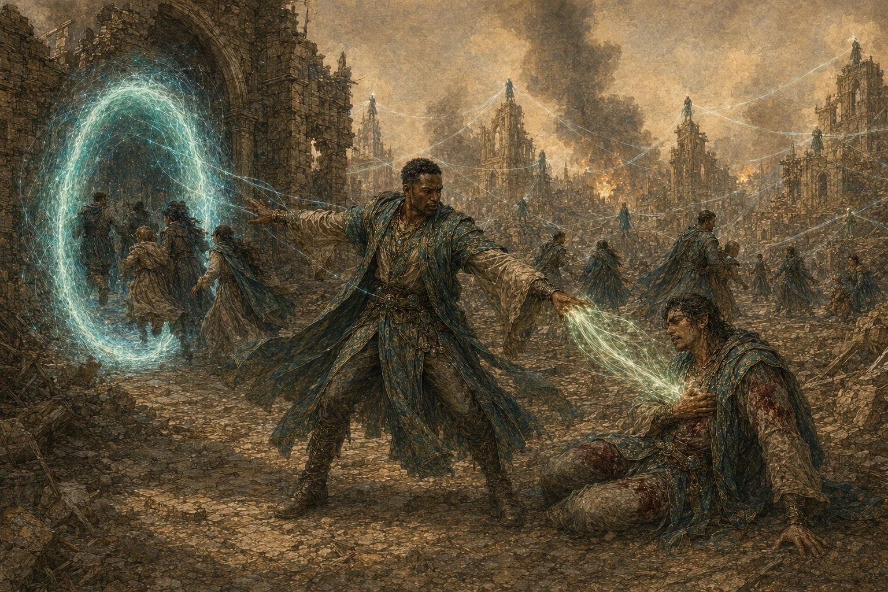
Единый фронт · ранг V
Вокруг вас постоянно действует аура радиусом 60 футов. Другие дружественные существа в ауре имеют иммунитет к состоянию «испуган». Если союзник уже находится под действием эффекта, накладывающего это состояние, его последствия подавляются, пока союзник остаётся в ауре, но исходный эффект сам по себе не прекращается. В начале каждого своего хода находящийся в ауре союзник получает 5 временных хитов. Это не лечение. Несколько аур «Единого фронта» не складываются. Аура не требует действия или концентрации и не отключается только из-за потери сознания, пока действует ранговая связь с резервом.
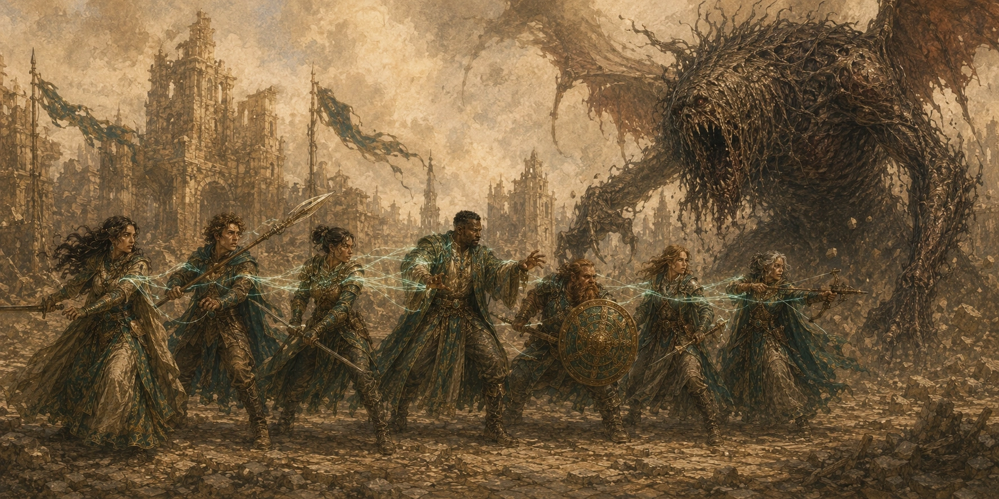
VI. Правила для направляющих
| Ранг | Профиль | Атака | Доп. кубики | Дальность / область | Доп. применения | Предел уровня |
|---|---|---|---|---|---|---|
| II | 2 | +1 | +2 кубика | ×1,5 | 2 | макс. уровень −1 |
| III | 5 | +3 | +5 кубиков | ×1,8 | 3 | макс. уровень −1 |
| IV | 12 | +4 | +12 кубиков | ×3 | 4 | до максимального |
| V | 24 | +5 | +24 кубика | ×50 | 5 | до максимального |
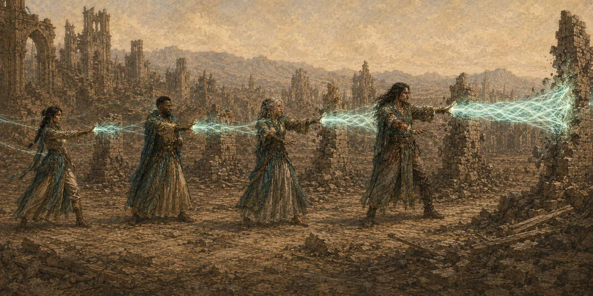
Бонус к СЛ плетений
II +2, III +4, IV +6, V +7. Это профиль текущего ранга: значения не складываются. Бонус применяется только к СЛ спасбросков против ваших плетений и не добавляется автоматически к броскам атаки плетением, проверкам направления или другим СЛ.
Профиль усиления плетений Единства
Профиль работает как ангреалоподобное усиление создаваемого плетения и не повышает ваш текущий или максимальный Уровень Силы (Power Level), не открывает новые известные плетения и не создаёт обычные ячейки. Профиль определяет бонус к атаке плетением, дополнительные кубики основного урона и множитель дальности/линейного размера области.
Дополнительные кубики урона
Добавляются один раз за сотворение к одному броску основного урона плетения и имеют тот же тип и размер кубика. Если одна общая величина урона применяется ко всем целям области, усиленный бросок применяется ко всем этим целям. При нескольких атаках или повторяющемся уроне направляющий выбирает один подходящий бросок.
Дальность и область
Множитель применяется к каждому числовому расстоянию, определяющему дальность или линейный размер области: радиусу, длине конуса, длине и ширине линии, стороне куба и т. п. Математическую площадь/объём не умножайте. «На себя» и «Касание» сами по себе не превращаются в дистанционные значения, но числовая область, исходящая от персонажа, увеличивается. Точное значение сохраняется; на сетке 5 футов для определения полностью покрытых клеток округляйте вниз только до полной клетки.
Ангреалы и са’ангреалы
Усиление Единства и реальный ангреал/са’ангреал относятся к одному типу усиления и не складываются. Сравните эквивалентную мощность текущего профиля Единства (2 / 5 / 12 / 24) с мощностью артефакта и используйте более сильный профиль. Соответствующий один профиль определяет бонус атаки, дополнительные кубики и множитель дальности/области. Бонус к СЛ плетений Единства остаётся отдельным.
Дополнительные применения плетений
Это отдельный ресурс: 2 на II ранге, 3 на III, 4 на IV и 5 на V. Значение текущего ранга заменяет предыдущее. Каждое применение позволяет сотворить доступное плетение без расходования обычной ячейки. На II–III рангах уровень такого плетения не может превышать максимальный доступный уровень минус 1; на IV–V рангах он может быть максимального доступного уровня. Все применения восстанавливаются после продолжительного отдыха. Они не дают новых известных плетений и не меняют экономику действий.
VII. Связь, отсечение и отзыв
Штатный доступ
Механический профиль текущего ранга уже отражает штатный объём энергии, получаемый через сеть. «Порция Воли» не является отдельным скрытым числовым ресурсом и не позволяет по желанию собирать «половину следующего ранга».
Потеря подчинённых
Ранг не зависит от количества людей, физически находящихся рядом или непосредственно подчинённых персонажу. Потеря отдельных связей не выключает ранг автоматически.
Временное отсечение
Формальный ранг сохраняется, но активная подпитка прекращается. Параметры временно пересчитываются без ранговых преимуществ; после восстановления канала возвращается прежний профиль. Повторно получать ранг не требуется, а ранее сделанные выборы ранговых повышений характеристик не меняются и не могут быть перераспределены при восстановлении связи.
Окончательное снятие
Удаляется только фактически полученное от Единства повышение характеристик; независимые источники не трогаются. Неполученные из-за действовавшего предела пункты не вычитаются. После снятия повышенных пределов значения, превышающие максимум оставшихся источников, уменьшаются до допустимого максимума. Максимум хитов и запас Костей Хитов пересчитываются по обычной формуле без Единства. Если новый максимум хитов ниже текущих хитов, текущие хиты уменьшаются до нового максимума; это не считается получением урона. Полностью разрешившиеся мгновенные эффекты Единства задним числом не отменяются.
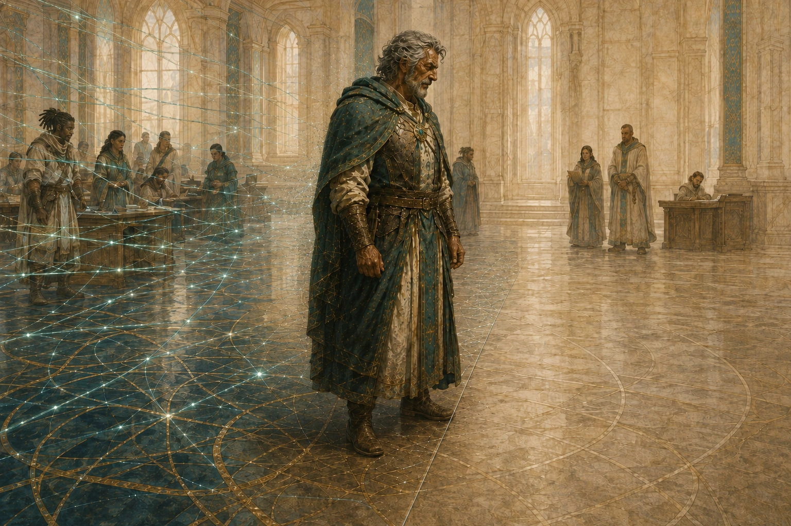
Посвящённый при полном подавлении связи
Штрафы I ранга отражают действующий Взнос Воли. Если канал связи полностью временно подавлен и передача Взноса в резерв прекращается, −1 к двум выбранным характеристикам, −1 к инициативе и −1 ко всем спасброскам временно не применяются. Формальный I ранг сохраняется. После восстановления канала возвращаются те же штрафы к тем же двум характеристикам. Простое блокирование получения энергии из резерва не снимает штрафы I ранга, если исходящая передача Взноса продолжает работать.
Кризисное перераспределение
Конклав и инфраструктура могут в рамках конкретной сцены направлять дополнительную энергию людям, группам или территориям. Такой эффект не выводится автоматически из ранга и должен иметь отдельно заданные условия, длительность и механику.
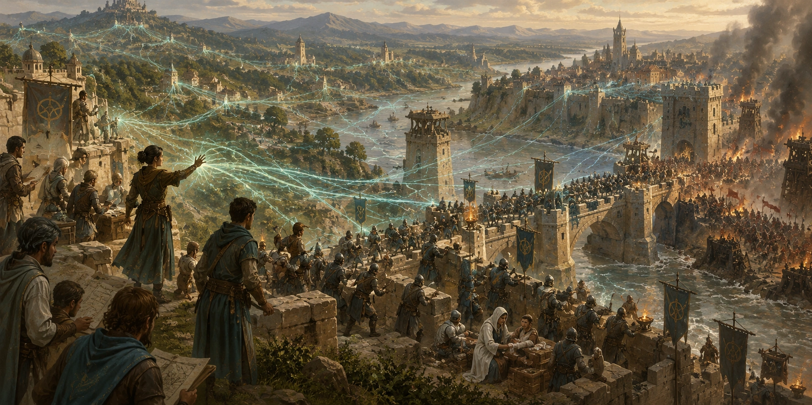
VIII. Альтернативные правила
Система Очков Плетений
Если используется альтернативная Система Очков Плетений, обычные ячейки полностью заменяются Очками Плетений. Дополнительные применения Единства остаются отдельным ресурсом 2 / 3 / 4 / 5 и позволяют сотворить соответствующее плетение без расходования Очков Плетений. «Господство Единой Силы» в режиме восстановления полностью восстанавливает обычный запас Очков Плетений до максимума; в режиме дополнительного плетения очки расходуются по обычным правилам. Бонусы СЛ и профиль усиления от выбора системы оплаты не меняются.
Истощение
Если используется опциональное правило Истощения, восстановление ячеек или Очков Плетений через «Господство Единой Силы» не уменьшает уже накопленную нагрузку и не снимает уровни истощения. Дополнительное применение плетения учитывается по фактическому уровню созданного плетения. Профиль усиления Единства и +2 эффективных уровня «Единства Плетений» сами по себе дополнительной нагрузки не создают: учитывается фактически израсходованный обычный ресурс. «Легендарное плетение» учитывается по реально израсходованной ячейке или Очкам Плетений. Ограничения максимального уровня плетений от текущего Истощения применяются ко всем способностям Единства.
IX. Границы механики
Границы силы Проводника
Художественные описания «безграничной силы», полной регенерации, абсолютного пророчества, локального изменения реальности или автоматической защиты Узора не создают самостоятельных универсальных способностей V ранга. Механика Проводника состоит из прямо перечисленных ранговых бонусов и способностей. Кризисное воздействие на Узор, аномалии и крупномасштабные угрозы требует отдельного ритуала, инфраструктурного правила или механики сцены.
Личные способности членов Конклава
Уникальные свойства отдельных Проводников — особая устойчивость канала, исключительное исцеление, военный талант, способность организовать специфический кризисный ритуал и т. п. — принадлежат конкретным NPC и не переходят автоматически ко всем персонажам V ранга.
Несколько плетений
Сам V ранг не даёт скрытого универсального права удерживать «до шести плетений». Используйте обычные правила WoT 5e и прямо перечисленные способности персонажа. Ограничение одной концентрации сохраняется, если конкретное правило прямо не устанавливает иное.
X. FAQ
Складываются ли +2 к характеристикам каждого ранга?
Да. Пакеты II–V накопительны, но на каждом ранге можно выбрать новую пару характеристик. Действуют пределы текущего ранга.
Как масштабируется «Обратный поток»?
Используйте только профиль текущего ранга: II — 1к8 + БМ; III — 2к8 + 2 × БМ; IV — 3к8 + 3 × БМ; V — 5к8 + 3 × БМ. Значения предыдущих рангов не складываются.
Складываются ли бонусы инициативы и спасбросков разных рангов?
Нет. Используйте только профиль текущего ранга.
Получает ли V ранг 2+3+4+5 дополнительных применений?
Нет. На V ранге их ровно 5.
Даёт ли Усиление Единства новые ячейки или повышает Power Level?
Нет. Это усиление конкретного плетения; обычный запас ресурсов и Power Level не изменяются.
Можно ли сложить усиление Единства и ангреал?
Нет. Используется более сильный из двух профилей усиления; бонус к СЛ Единства остаётся отдельно.
Может ли Проводник восстановить Господством Единой Силы и свои 5 дополнительных применений?
Нет. Режим восстановления возвращает только обычные ячейки или, при альтернативной системе, обычный запас Очков Плетений.
Отключается ли Единый фронт, если Проводник потерял сознание?
Нет, не только из-за потери сознания. Аура действует, пока сохраняется ранговая связь с резервом. Щит сплочённости, напротив, прямо требует сознания.
Можно ли потерять должность, сохранив ранг?
Да. Ранг и должность — разные понятия.
Можно ли просто отказаться платить Взнос Воли?
Не обычным волевым решением после формирования канала. Нужна процедура отключения, окончательное снятие связи или иной специальный эффект.